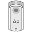

HVAC actuators device properties
The listed properties are displayed in the Hardware and network editor > Inspector window > Properties tab when the device with KNX PL-Link is selected in the Device view tab.
|
GDB111.1 | GDB111.9 | GDB181 | SSA118.09HKN | N605D41 | RL605D23 |
|
|  |
|
|
|


General and Catalog information
The General and Catalog Information group provides information about the device.
Property | Description | Default value |
|---|---|---|
Mode | Mode shows the network mode of the device. Read only. | KNX PL-Link |
Name | Name is a text field to enter the name of the device. The name is used to identify the device in the device view. | Depends on other settings. |
Comment | Comment is a free text field to enter any helpful information on the device. | - |
Power consumption | Power consumption shows the power the device consumes. Read only. Unit: [mA] The value is used to calculate the remaining power of the KNX rail. See also power consumption and supply on KNX rail of PXC3 or KNX rail of DXR2. | Depends on the device type. |
Short designation | Short designation shows a short description of the device. Read only. | Depends on the device type. |
Order number | Order number shows the device type. Read only. | Depends on the device type. |
Version | Version shows an internal version of the device. Read only. | - |
Description | Description shows a short description of the device. Read only. | Depends on the device type. |
Device information
The Device information group provides information about the device and settings.
Property text | Description | Default value |
|---|---|---|
Device address (KNX) | Device address (KNX) shows the fixed standard address for devices with KNX PL-Link. Read only. | 255 (this is not a KNX address format) |
Serial number used | Serial number used defines the method used for device identification.
|
|
Serial number | Serial number defines the serial number used for device identification. Serial number is only enabled and relevant if Serial number used is enabled. | 000000000000 |
VAV Operating Mode | VAV Operating Mode
|
|
Position adaption 1) | Position adaption mode defines how the opening angle is mapped to the 0...100 [%] opening range. Adaptive positioning is needed for VAV boxes with a damper opening range other than 0..90°.
|
|
 : The serial number entered in the text field Serial number is used for device identification.
: The serial number entered in the text field Serial number is used for device identification. : Device identification has to be done in Web interface. The device has to be in programming mode for Web interface to perform the device identification.
: Device identification has to be done in Web interface. The device has to be in programming mode for Web interface to perform the device identification. VAV: Air volume flow control 0..100% between Vmin and Vmax
VAV: Air volume flow control 0..100% between Vmin and VmaxAlarming
Property | Description | Default value |
|---|---|---|
Alarming |
|
|
Functions
Channel overview
The functions table in the Channel Overview provides an overview of the channels of the device. Depending on the device the values in the table are read only or can be edited. The available types depend on the device and the application function.
Property | Description | ||
|---|---|---|---|
|
Name | Name of the channel. Read only. | ||
Type | Name of the function. | ||
Type | Description | Number of channels used | |
System | System contains the device information that is mapped to the BACnet object PrPhDev (peripheral device). | 1 | |
Device | (No input) | --- | |
ADA | Air damper actuator (ADA) | 1 | |
ADAVAV | VAV compact controler (ADA VAV) | --- | |
HVA | HVAC valve actuator (HVA) | --- | |
Zone | Part of the geographical address of the device. Range: 1...126 | ||
Room | Part of the geographical address of the device. Range: 1...63 | ||
Subzone | Part of the geographical address of the device. Range: 1...15 Note | ||
Some of the functions can be configured. The properties of those functions are described below in order of their appearance in the drop-down list.
VAV compact controller > Air damper actuator VAV (ADA VAV)
Property | Description | Default value |
|---|---|---|
|
Use peripheral zone | Enable a pheriperal zone for communication.
|
|
Peripheral zone | Peripheral zone number Range: 1..4095 | 1 |
Actual flow COV | Change of value, COV defines the change in the value of the actual airflow that triggers the sending of the value of the actual air flow. Range: 0...12000 [m3/h] | 1 |
Minimum repetition time | Repeat time defines the minimal time interval before the next value of the actual air flow can be sent. Range: 10...60 [s] | 10 |
Backup mode | Backup mode defines the behavior of the actuator in case of a timeout for receiving a value of the actuator setpoint.
|
|
Backup value | Backup value defines the position of the actuator in case of a timeout for receiving a value of the actuator setpoint. The Backup value is only relevant if the property Backup mode is set to Backup value. Range: 0...100 [%] | 0 |
Current position COV | Change of value in % after which an updated value is transmitted over the bus after the min. rep. time has been exceeded. Range: 0...100 [%] | 1 |
Current pos min rep time | Minimum repetition time to report an updated value if the COV is exceeded. Range: 10...60 [s] | 10 |
Altitude level 2) | Altitude defines the position of the device above sea level. To be set in 500 m steps. Range: 0…5000 [m] | 0 |
Actual discharge trans. COV |
| 1 |
1) If the subsystem specific extension VAV setpoint (AO - subsystem-specific extension) of the BACnet object Analog output object (AO) is enabled, you have to configure this property in the BACnet objects editor or in Web interface.
2) If the subsystem specific extension Flow pressure measuring properties (AI - subsystem-specific extension) of the BACnet object Analog input object (AI) is enabled, you have to configure this property in the BACnet objects editor or in Web interface.
Networked Air Volume Actuator > Air damper actuator (ADA)
Property | Description | Default value |
|---|---|---|
|
Peripheral zone | Peripheral zone number Range: 1..4095 | 1 |
Backup mode | Backup mode defines the behavior of the actuator in case of a timeout for receiving a value of the actuator setpoint.
|
|
Current position COV | Change of value in % after which an updated value is transmitted over the bus after the min. rep. time has been exceeded. Range: 0...100 [%] | 1 |
Current pos min rep time | Minimum repetition time to report an updated value if the COV is exceeded. Range: 10...60 [s] | 10 |
Backup value | Range: 0...100 [%] | 50 |
Networked rotary actuator > 6-way ball valves HVA
Property | Description | Default value |
|---|---|---|
|
Current position COV | Change of value in % after which an updated value is transmitted over the bus after the min. rep. time has been exceeded. Range: 0...100 [%] | 1 |
Current pos min rep time | Minimum repetition time to report an updated value if the COV is exceeded. Range: 10...60 [s] | 10 |
Backup mode | Backup mode defines the behavior of the actuator in case of a timeout for receiving a value of the actuator setpoint.
|
|
Backup value | Backup value defines the position of the actuator in case of a timeout for receiving a value of the actuator setpoint. The Backup value is only relevant if the property Backup mode is set to Backup value. Range: 0...100 [%] | 50 |
SSA118 > HVAC valve actuator (HVA)
Property | Description | Default value |
|---|---|---|
|
Current position COV | Change of value in % after which an updated value is transmitted over the bus after the min. rep. time has been exceeded. Range: 0...100 [%] | 5 |
Current pos min rep time | Minimum repetition time to report an updated value if the COV is exceeded. Range: 10...60 [s] | 10 |
Actual position heartbeat | User can set the value how often should the actuator send a telegram indicating that it is on the network. Range: 10...900 [s] | 900 |
Actual setpoint receive timeout | The lost communication time before the actuator enters into the Backup mode. Range: 180..6000 [s] | 1860 |
Maximum position | Maximum position provides – according to the parameterization – the following functionalities: -Receiving the actual actuating value (0…100%) of the other valve actuators or heating boilers that have the same group address, comparing it to the own actuating value and sending the own actuating valuve on this object, if it is higher than the other values. -Sending the own actuating value to the other valve ac-tuators in order to initiate this comparison. Range: 0...255 [%] | 0 |
Minimum position | Range: 0...255 [%] | 0 |
Backup value | Backup value in case of failure of actuating value and Backup mode=Backup value. Range: 0...100 [%] | 50 |
Backup mode | Backup mode defines the behavior of the actuator in case of a timeout for receiving a value of the actuator setpoint.
|
|
Polarity inverse |
|
|
SSA118 > Dew Point Sensor (DSP)
Property | Description | Default value |
|---|---|---|
|
Enable Dew Point Status | Enabling dew point status periodically sends the condensation contact status. |
|
Heartbeat | Feature of Remote Notification that informs predefined devices or groups at regular intervals that the system is functioning properly. | 900 |
Minimum repetition time | Minimum repetition time defines the minimal time interval before the next process value can be sent. | 10 |
SSA118 > Window Switch (WOS)
Property | Description | Default value |
|---|---|---|
|
Enable Window status | Enabling window status periodically checks if the window is open or close. |
|
Heartbeat | Feature of Remote Notification that informs predefined devices or groups at regular intervals that the system is functioning properly. | 900 |
Minimum repetition time | Minimum repetition time defines the minimal time interval before the next process value can be sent. | 10 |